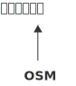
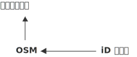
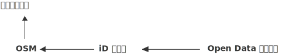
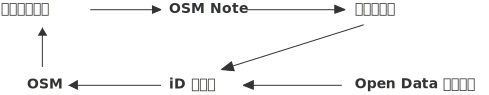

飲水地圖
與
OpenStreetMap

飲水地圖
2015 年 4 月發起，仍在進行中。
「一個600ml的瓶裝水，需要耗費600ml的6~7倍水量製造它的塑膠瓶！在缺水的時代來臨時，別再讓塑膠瓶跟我們搶水資源了！」

1.
- 發起人
- 工程師
- watermap.teia.tw
- osm.org

2.
3.

4.

數據
- OSM 的台灣飲水點數量
- 2017/5/13：1483 個
- 持續成長
- watermap 網站流量
- 平均每個月 600~1000 人次